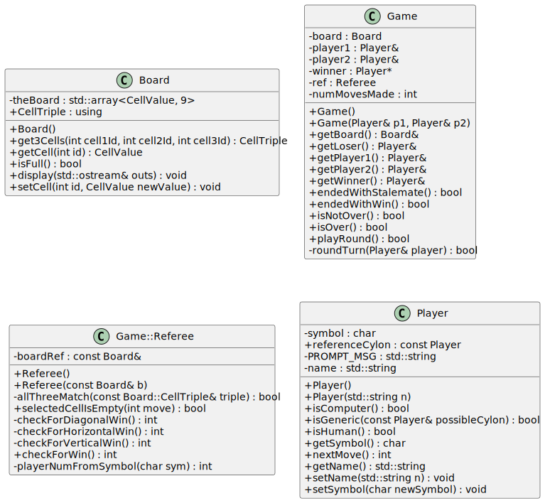

What is A Module?
Thomas J. Kennedy
1 Overview
Both procedural and object-oriented code is split into multiple files.
-
In C++ each compilation unit consists of a header-implementation file pair.
-
In Java each class is usually found in a
.javafile with a corresponding name1 which is included in a larger package. -
In Rust each module is defined by a single
.rsfile which is included in a larger crate. (Rust will not be discussed in this lecture.)
Keep in mind that module refers to an organizational unit within a codebase. Any time that word module is used during this lecture… it refers to the unit of code, not a course module.
2 Wait… I Already Know About __import__ and __from__
We have already used statements such as…
import sys
and
from __future__ import annotations
to make packages and modules available within a .py file (Python source code file). We have even imported code from our own modules. However, we never formalized definitions for module and package nor have we discussed best practices.
3 Let Us Look at Examples!
Before we discuss Python best practices and conventions… let us revisit C++, Java, or both C++ and Java. The point of this review is not to learn about C++ and Java codebases, but to revisit something familiar.
Focus on the subsection that corresponds to the language with which you are most familiar.
The examples fot this lecture are based on Tic-Tac-Toe:
Your focus should be on formalizing a point of reference. You do not need to set up (or be able to set up) a C++ or Java codebase from scratch.
If you are truly curious… the upcoming directory listings were produced with the Linux
treecommand.
3.1 C++ Codebase
C++ codebases are still the Wild West. The “standard” really depends on…
- the organization
- the project
- the selected build system (e.g., make or CMake)
For this example we will go with the throw everything in a src or source directory with a makefile approach that is common in most 100-level, 200-level, and 300-level C/C++ programming courses.
Example 1: C++ Codebase├── source │ ├── Board.cpp │ ├── Board.h │ ├── bodgeUnitTest.h │ ├── Game.cpp │ ├── Game.h │ ├── makefile │ ├── Player.cpp │ ├── Player.h │ ├── playTicTacToe.cpp │ ├── Strategy.cpp │ ├── Strategy.h │ ├── TestBoard.cpp │ ├── TestPlayer.cpp │ ├── utilities.cpp │ └── utilities.h └── uml ├── tic-tac-toe.puml └── tic-tac-toe.svg
The makefile contains the commands required to
-
compile each
.cppfile into.ofile -
link the
.ofiles into the final program (executable) -
clean the workspace (i.e., delete the executable and
.ofiles).
In a C++ codebase that includes classes… each class will be split between a
-
header file (
.h, or.hpp) that includes the class declaration (along with function declarations/prototypes) -
implementation file (
.cpp,.cc, or.cxx) that contains the definition for each class and all non-inlined functions (i.e., the actual implementation).
The uml directory contains UML Class diagrams. A UML Class diagram shows the connections (associations) between classes. This is not a standard directory. The .puml file is markup that PlantUML turns into an svg image.
└── uml
├── tic-tac-toe.puml
└── tic-tac-toe.svg
Example 2: PlantUML Markup@startuml skinparam classAttributeIconSize 0 hide empty members class Board { +Board() +get3Cells(int cell1Id, int cell2Id, int cell3Id) : CellTriple +getCell(int id) : CellValue +isFull() : bool -theBoard : std::array<CellValue, 9> +CellTriple : using +display(std::ostream& outs) : void +setCell(int id, CellValue newValue) : void } class Game { +Game() +Game(Player& p1, Player& p2) -board : Board +getBoard() : Board& +getLoser() : Player& +getPlayer1() : Player& +getPlayer2() : Player& +getWinner() : Player& -player1 : Player& -player2 : Player& -winner : Player* -ref : Referee +endedWithStalemate() : bool +endedWithWin() : bool +isNotOver() : bool +isOver() : bool +playRound() : bool -roundTurn(Player& player) : bool -numMovesMade : int } class Game::Referee { +Referee() +Referee(const Board& b) -allThreeMatch(const Board::CellTriple& triple) : bool +selectedCellIsEmpty(int move) : bool -boardRef : const Board& -checkForDiagonalWin() : int -checkForHorizontalWin() : int -checkForVerticalWin() : int +checkForWin() : int -playerNumFromSymbol(char sym) : int } class Player { +Player() +Player(std::string n) +isComputer() : bool +{static} isGeneric(const Player& possibleCylon) : bool +isHuman() : bool +getSymbol() : char -symbol : char +nextMove() : int +{static} referenceCylon : const Player -{static} PROMPT_MSG : std::string +getName() : std::string -name : std::string +setName(std::string n) : void +setSymbol(char newSymbol) : void } @enduml
Example 3: PlantUML Class Diagram
3.2 Java Codebase
Java projects tend to follow the Android project conventions. These projects tend to use Gradle or Maven.
A full discussion of Gradle and Maven will be left for a software engineering course, e.g., CS 350. However, if you are truly curious… feel free to take a look at my CS 350 Introduction to Gradle lectures.
Example 4: Java Codebase├── build.gradle ├── config │ └── checkstyle │ └── checkstyle.xml ├── gradle │ └── wrapper │ ├── gradle-wrapper.jar │ └── gradle-wrapper.properties ├── gradlew ├── gradlew.bat └── src ├── main │ └── java │ └── edu │ └── odu │ └── cs │ └── cs330 │ └── examples │ ├── Board.java │ ├── Game.java │ ├── KeyboardStrategy.java │ ├── package-info.java │ ├── Player.java │ ├── PlayTicTacToe.java │ ├── Referee.java │ └── Strategy.java └── test └── java └── edu └── odu └── cs └── cs330 └── examples ├── TestBoard.java ├── TestGame.java ├── TestPlayer.java └── TestReferee.java
3.2.1 Top Level Directories & Files
Let us focus on just the top level.
Example 5: Java Directory Structure - Top Level├── build.gradle ├── config ├── gradle ├── gradle.properties ├── gradlew ├── gradlew.bat └── src
Let us examine each item, one at a time.
-
build.gradle- This is the Gradle build file. It specifies which tasks to run, which plugins to use, and a few settings. -
config- This is an auxiliary directory I use to store configuration files (e.g., checkstyle and other code linting rules). -
gradle- This is a directory containing Gradle Wrapper files. These files allow us to run Gradle without needing to intall it first. -
gradle.properties- This is an optional file that can be used to specify additional settings. -
gradlew- This is a bootstrap/wrapper script for Linux and macOS. -
gradlew.bat- This is a bootstrap/wrapper script for Windows. -
src- This directory contains allmainandtestcode.
3.2.2 The src Directory
Eclipse, by default, places test classes and main classes in the same directory.
Example 6: Gradle src Directory└── src ├── main │ └── java │ └── edu │ └── odu │ └── cs │ └── cs330 │ └── examples │ ├── Board.java │ ├── Game.java │ ├── KeyboardStrategy.java │ ├── package-info.java │ ├── Player.java │ ├── PlayTicTacToe.java │ ├── Referee.java │ └── Strategy.java └── test └── java └── edu └── odu └── cs └── cs330 └── examples ├── TestBoard.java ├── TestGame.java ├── TestPlayer.java └── TestReferee.java
Take note of how the standard Java package directory structure exists for both the test code and main code.
You probably noticed a java subdirectory for both main and test:
└── src
├── main
│ └── java
└── test
└── java
While most of our work will be with Java code, Gradle supports composite projects (i.e., projects that use generated code or multiple languages) and non-code resource files.
4 Python Codebase
If you have no already done so… open a copy of Module-09/Example-3-Python.
A Python codebase is more organized than a C++ codebase and less over-divided than a Java codebase.
Example 7: Python Codebase├── examples │ ├── board.py │ ├── game.py │ ├── __init__.py │ ├── player.py │ ├── referee.py │ └── strategy.py ├── play_tictactoe.py ├── tests ├── examples │ ├── test_board.py │ ├── test_game.py │ ├── test_player.py │ └── test_referee.py └── __init__.py
Note that setup.py and the distutils module were officially deprecated with the Python 3.12 release. The focus of this lecture is on general project structure. Topics such as
-
publishing a Python package to PyPy
-
setting up tox or poetry
-
writing
pyproject.toml
are outside the scope of this discussion. Let us start with the top-level directories and files.
Example 8: Python Codebase - Top Level├── examples ├── play_tictactoe.py ├── tests
You will notice three items:
-
examples- this is our package. In practice… the name should be more descriptive than the word examples. For this project… tictactoe would be more apt. -
play_tictactoe.py- this is the file containing our driver logic (i.e., the top-level functions that use the code from our package). -
tests- this is a directory that contains a test for each module in our package.
4.1 Definitions
I imagine that you are saying to yourself something along the lines of…
Are module and package the same thing? What are they, exactly?
A couple definitions are definitely in order.
-
module - a
.pyfile containing code (e.g., functions, classes, or constants) that is imported into a larger program through one or moreimportstatements. -
package - a collection of
.pyfiles that serve as modules that are collected into a larger directory.
4.2 Back to Structure
You probably noticed that the tests directory contains an examples subdirectory.
Test Code
├── tests
├── examples
│ ├── test_board.py
│ ├── test_game.py
│ ├── test_player.py
│ └── test_referee.py
└── __init__.py
Production Code
|
├── examples
│ ├── board.py
│ ├── game.py
│ ├── player.py
│ ├── referee.py
│ ├── strategy.py
│ └── __init__.py
Did you notice the close-to-one-to-one mapping? Each module usually has its own test suite (unit or integration). System tests are not included in this codebase.
The __init__.py in test directories and package directories can be used for import tricks. However, the ones codebase are empty files..